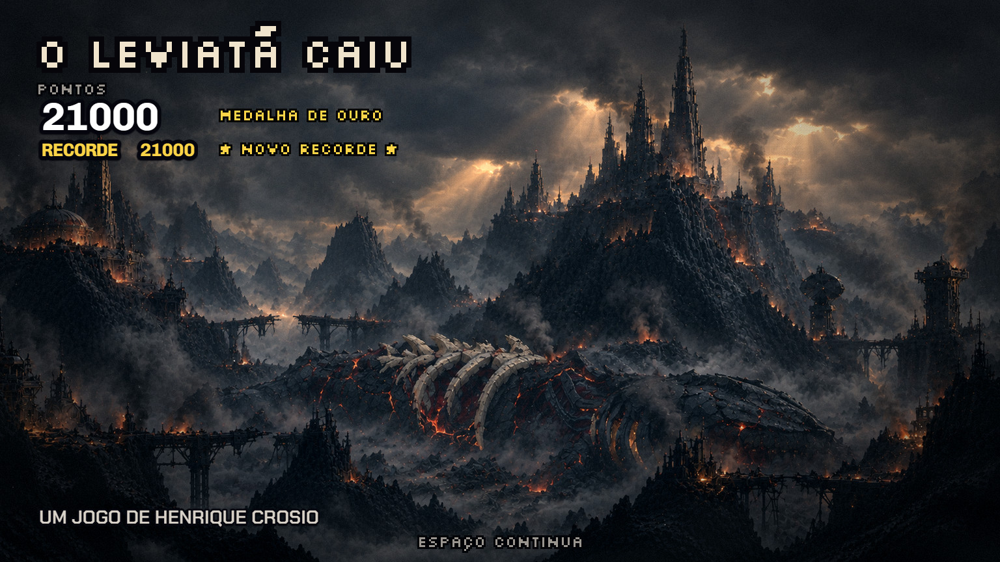
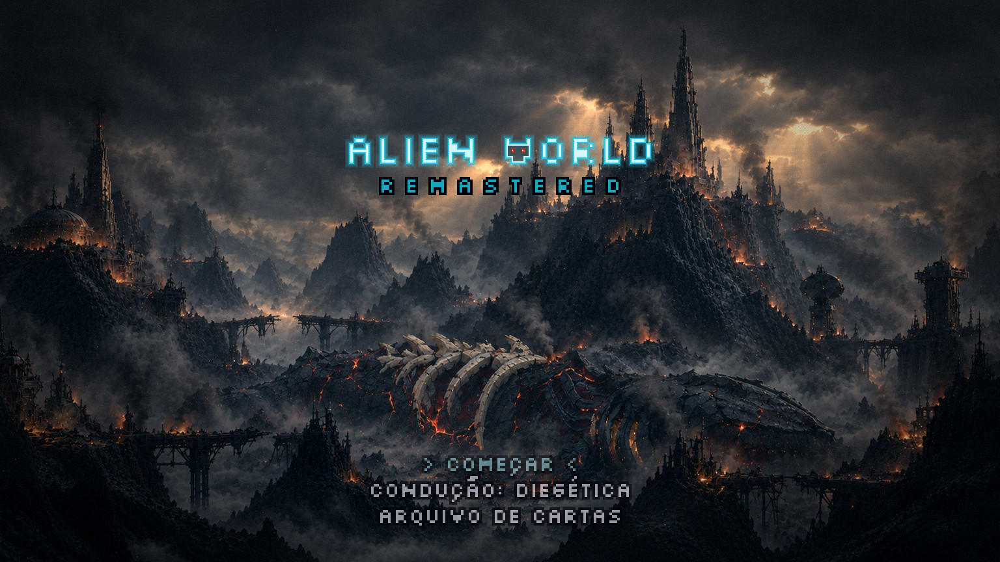

A tela final: o amanhecer, parte A
13/11 · bloco I, etapa 3 · spec specs/2026-11-13-bloco-i-tela-final-amanhecer-design.md ·
plano plans/2026-11-13-tela-final-parte-a.md.
A parte A é o esqueleto jogável: a sua pintura parada (ainda sem vida), a cena em dois tempos e o letreiro avariado. A cutscene final já abre esta tela. A vida da pintura (fumaça, fogo, brasas, lava, raios, bruma, cinza) é a parte B, um efeito por rodada.
O caminho inteiro: o resultado, a tecla, o menu
Filmado no jogo. O amanhecer abre do preto; entram o título, os pontos com a medalha, o recorde, o crédito e a tecla; aos 7 s a tecla é apertada: o resultado sai, o letreiro chega freando e a lista desce.
O resultado inteiro (6,5 s)

O menu pousado (19 s)

O letreiro avariado: qual letra?
Uma letra falha uma vez a cada 8 s: de 2 a 4 piscadas curtas e, em cerca de um terço das vezes, um apagão de 1 a 2 s que volta com um zumbido. Fica apagada perto de 6% do tempo. O ritmo é o mesmo nos três vídeos; só a letra muda. Está instalado o O.
O (instalado): W RLD
E: ALI N
R: WO LD
Na tela inteira (o O)
O que eu preciso de você
- O resultado: o lugar e o tamanho de cada coisa servem? O título no céu de cima à esquerda, os pontos e a medalha abaixo, o crédito e a tecla embaixo.
- O crédito: a presença dele está certa, ou você o quer maior?
- O letreiro: qual letra falha (O, E, R ou outra), e o ritmo está bom ou quer mais raro ou mais nervoso?
- A pintura no jogo: o tom está certo como base, antes da vida?
Para ver jogando: no menu, [R] ensaia o resultado sem gravar nada e [T]
troca entre a noite e o amanhecer. O caminho de verdade (zerar a F4) grava a vitória e passa a abrir o amanhecer.
Ainda não conferido: o menu sem a camada HD e o movimento reduzido.